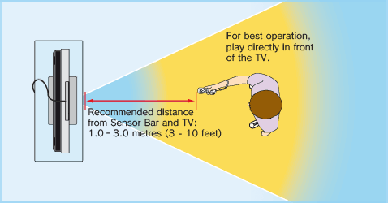

2 |
Usage Precautions |
 |
Note: All references to "Wii Remote" in this manual refer to both the Wii Remote and Wii Remote Plus, unless stated otherwise.
  Additional Precautions
 
When using the Wii Wheel™, please follow the precautions below to prevent causing damage to the Wii Wheel and surrounding objects, or injury to yourself and other people.
Please read the Wii Wheel Instruction Manual for more information on how to use the product safely. If the product fails to operate normally, please consult the product manual or contact the Nintendo Service Centre.
When using the Nunchuk, please follow the precautions below to prevent causing damage to the accessory and surrounding objects, or injury to yourself and other people.
Please read the product manual for more information on how to use the product safely. If the product fails to operate normally, please consult the product manual or contact the Nintendo Service Centre.
Give yourself plenty of room!
You will probably move around while using the Wii Remote, so be careful that all areas that you might move into are clear. Make sure that furniture, objects and people are out of the play area so you don’t accidentally bump into them while playing. Also, as indicated in the Wii Operations Manual, it is recommended to stay at least 1 metre (3 feet) from the television.


This information is available at
Many people don’t know what the difference between 50 Hz and 60 Hz is, but since most modern TV models support 60 Hz it’s definitely worth finding out if your TV is compatible. In basic terms, Hz (hertz) is related to the number of frames per second (fps) appearing on your screen.
50 Hz produces 25 fps and 60 Hz produces close to 30 fps, which may not sound like a big difference, but the increase in quality from 25 to around 30 fps is quite noticeable on-screen. With 60 Hz you get a smoother game screen with less flicker and the game running at optimal speed, all of which produces a great gaming experience.
The default setting of the Wii console is 50 Hz (576i) Mode. To change this, activate 60 Hz (480i) Mode by selecting SCREEN, then TV TYPE in the Wii Settings. However, certain (mainly older) TV sets are unable to display games in 60 Hz (480i) Mode, and therefore a small number of players could experience difficulties using this display mode on their TVs. To find out if your TV set features 60 Hz (480i) Mode, consult your TV instruction manual or contact the manufacturer.
If, after changing the setting to 60 Hz (480i) Mode, the screen appears blank or distorted, it will likely be the case that your TV does not support 60 Hz (480i) Mode. To revert to the default setting, press RESET on the Wii console while holding
 ⇩, and the Wii console will restart in 50 Hz (576i) Mode. For additional information on how to set the TV TYPE, please refer to the Wii Operations Manual – Channels & Settings. ⇩, and the Wii console will restart in 50 Hz (576i) Mode. For additional information on how to set the TV TYPE, please refer to the Wii Operations Manual – Channels & Settings.Also, when you connect the Wii RGB cable
 EDTV/HDTV (480p) is a progressive display mode that allows players to view and enjoy their software in the best possible quality. This means an intensely sharp picture and the game running at optimal speed with minimised flicker, all of which produces a great gaming experience. We at Nintendo® want players to enjoy our software under the best possible play conditions.
However, it may be the case that this mode cannot be displayed, depending on the combination of TV and cable that you use. To find out if your TV supports the Progressive Scan display needed for the EDTV/HDTV (480p) Mode, consult your TV instruction manual or contact the respective manufacturer for details. Please make sure to use the Wii Component Video cable (RVL-011) (sold separately) and to enable Progressive Scan on your display device when selecting this mode.
The default setting of the Wii is 50 Hz (576i) Mode. To change this, activate EDTV/HDTV (480p) Mode by selecting SCREEN, then TV TYPE in the Wii Settings. For additional information on how to set the TV TYPE, please refer to the Wii Operations Manual – Channels & Settings.
|
 on the Wii Remote – DO NOT let go of the Wii Remote itself. If your hands become sweaty, take a moment to dry your hands and the Wii Remote. If you use excessive motion and let go of the Wii Remote, the wrist strap may break and you could lose control of the Wii Remote. This could injure nearby people or cause damage to other objects.
on the Wii Remote – DO NOT let go of the Wii Remote itself. If your hands become sweaty, take a moment to dry your hands and the Wii Remote. If you use excessive motion and let go of the Wii Remote, the wrist strap may break and you could lose control of the Wii Remote. This could injure nearby people or cause damage to other objects. |
 |
 |